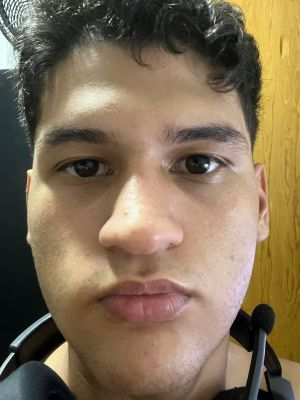

- Sou natural de Brasília-DF.
- tenho 18 anos de idade.
- Estudante de piano erudito na EMB desde 2021.
- Estudante de inglês no CILT desde 2021.
- Estudante de ciência da computação na UniCEUB desde 2025.
- Pretendo trabalhar no exterior na área de TI.
- Moro em Samambaia sul.
Minha Biografia
Meu nome é Henrique Lopes Borges de Souza , nasci em 23 de fevereiro de 2007, em Brasília, cidade onde moro até hoje e onde venho construindo uma trajetória pautada pela dedicação ao conhecimento, à arte e ao desenvolvimento pessoal.
Habilidades
- Música: estudos de piano iniciados em 2017 -aluno de escaleta, bombardino e flauta doce no colégio Anchieta (2017-2020) -aluno de teclado pelo projeto cantai (2019-2022) -aluno de piano popular na Máxima escola de música (2019-2023) -aluno de piano erudito no CMAB - Conservatório de Música e Artes de Brasília (2020-2021) -aluno de piano erudito na EMB - Escola de Musica de Brasília (2021-2025)
- Artes Marciais: aluno de karate alcançando até a faixa amarela (2012-2014) -Aluno de jiu-jitsu pela equipe Gilvan Rodrigues alcançando até a faixa laranja quarto grau (2015-2018) -Aluno de judô alcançando a faixa amarela (2015-2016) -Aluno de jiu-jitsu pela equipe Frank Douglas(desde 2023) -aluno de judô pelo centro olímpico (desde 2024)